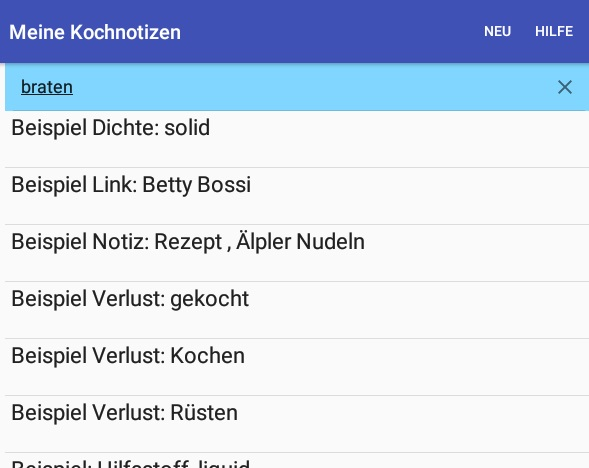
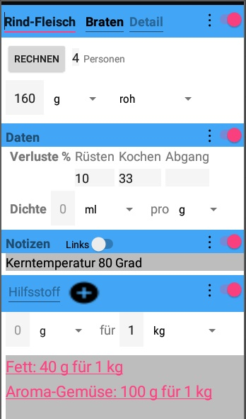
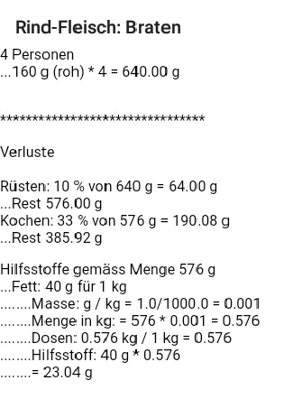

Meine Kochnotizen
- Eine Ablage anstelle von Zettelkästen für
- persönliche Notizen
- Rezepte
- Links auf Webseiten
- Mengenberechnungen, mit allen Umrechnungen von Masseinheiten, abhängig
von:
- Anzahl Personen:
- Verlust durch Rüsten, Kochen und Abgang wie Knochen
- Umrechnung von Gewichten und Volumen
- Bedarf von Hilfsstoffen
- Ein Satz von Standardmengen aus "Mengentabellen /
Mengenberechnungen" von Betty Bossi
Grund-Bildschirm und Suchresultate
Der Grundbildschirm zeigt eine Liste von:
- Soliden Waren
- Liquiden Waren
- Notizen

Neue Einträge in dieser Liste werden mit dem Menu "Neu" eingefügt.
Mit Eingaben im Suchfeld oben können Einträge gesucht werden.
Zusammengesetzte Wörter werden mit Bindestrichen geschrieben damit nach beiden Wörtern gesucht
werden kann.
Die Auswahl eines Eintrages zeigt die Details des Eintrages.
Detail-Bildschirm

- Mit den Schaltern am rechten Bildrand werden Abschnitte ein- und
ausgeblendet.
- Umgekehrte Dreiecke sind Auswahllisten.
- Notizen: freier Text oder
Links (Einfügen des URL einer Webseiten im Kopf der Webseite). Der Schalter "Links"
aktiviert/deaktiviert Links.
- Hilfsstoffe wie Oel und Fett: Daten im blauen Balken erfassen und mit
dem Knopf '+' einfügen.
Löschen erfolgt durch Selektion eines Hilfsstoffes im grauen Bereich.
Berechnungen
Tippen auf den Knopf "Rechnen" im Detail-Bildschirm löst die Berechnungen aus.

Vielleicht nützlich, wenn auch englisch:
Android Gesten